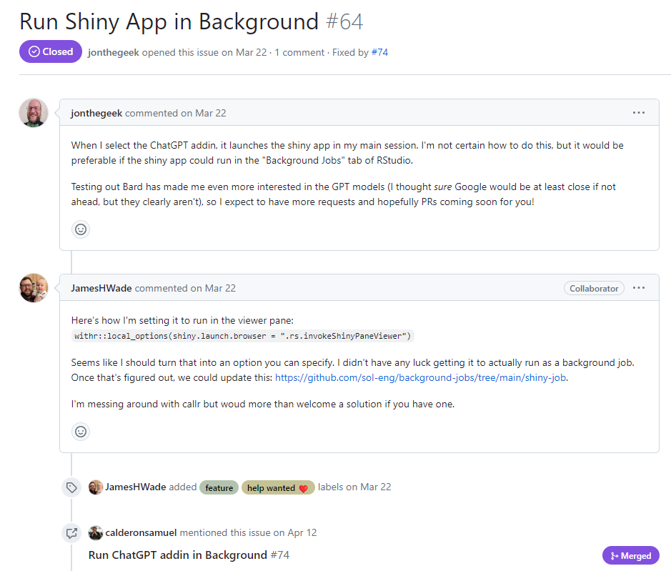
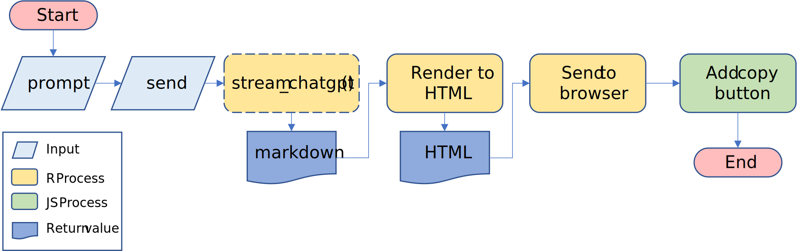
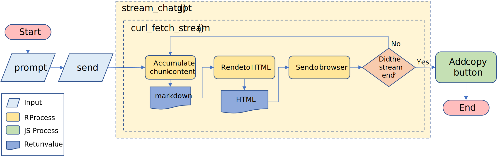

library(shiny)
ask_chatgpt <- function(prompt) {
# code to make the request
}
ui <- fluidPage(
textInput("prompt", "Enter your prompt"),
actionButton("send", "Send prompt"),
uiOutput("response")
)
server <- function(input, output, session) {
output$reponse <- renderUI({
ask_chatgpt(input$prompt) |>
shiny::markdown()
}) |>
bindEvent(input$send)
}
shinyApp(ui, server)On updating a chat assistant app for the RStudio IDE
rweekly
This post summarizes the challenges overcomed while trying to improve three areas of the ChatGPT addin (shiny app) from {gptstudio}.
The whole journey began quite unexpectedly for me. I was developing a shiny app for my work and decided to venture into writing JavaScript code. However, I felt that the autocomplete feature in the RStudio IDE wasn’t the best available. So, I decided to give VSCode a shot.
As I’m not well versed with JS (or VSCode), I was requesting a lot of help from ChatGPT. That’s when I stumbled upon the Genie extension, which integrates ChatGPT seamlessly into the IDE (provided you have a valid API key). That got me thinking: shouldn’t we have a similar integration for the RStudio IDE?
It turns out, I wasn’t the only one who had this idea. Version 0.1.0 of {gptstudio} was already on CRAN, so I decided to give its ChatGPT addin a try. To my surprise, it exceeded my expectations, and I was intrigued to explore it further. I enthusiastically checked out its GitHub repository and couldn’t resist giving it a well-deserved star. As I dug deeper, I made an unexpected discovery—an open issue with a help wanted label.

Run Shiny App in Background - issue #64
Isn’t that the guy from the R4DS slack channel? Also, I agree with him
This was the perfect issue to try to solve. Just a few days prior, I had watched a video discussing RStudio jobs for shiny apps. Although I couldn’t locate the video at the time of writing this, I did find a README file containing the relevant information.
To sum it up, I discovered that it is possible to launch an app as a background job and then open it from the R console. This functionality extends to shiny apps that are addins from a package. By doing this, you can have your background shiny app displayed in the Viewer pane of the RStudio IDE.
After trying this in my fork of the package, I documented all my code and submitted a Pull Request to the maintainers, which was integrated in very short time. I was very happy with this but still thought that there some things that could be improved.
The UI should resemble a chat
Even though at the moment you were able to have your chat assistant, the UI was a bit awkward to navigate when you had a long chat history. I had the intention to just move the text input to the bottom of the app, like in a chat window. In order to do that, I thought that I should incorporate shiny modules and separate the app into smaller, more manageable components. Okay, this was a couple more lines of code than I expected. After that, I thought that the viewer pane was very small to have a lot of controls always visible and decided to hide some inputs in a “Configuration” dropdown button.
But shiny doesn’t have native dropdown buttons. Should I import bs4Dash just to have them? Should I make my own? Maybe the theme colors are a bit weird. Should I change them? How on earth will I test all these changes? Will the previous tests even pass? I would love to have the app’s theme match the RStudio IDE theme of every user. I would also love to provide a welcome message to the users. Oh man, I would totally love to have a “Copy” button on every code chunk provided in the responses (this was the hardest thing to get done).
In the end, the small contribution I intended to make was 59 commits long, and I won’t even say how many files were affected. I was very hesitant to make a pull request for something nobody had asked for, so I went for the “Discussions” tab.
Me: Hey guys, I did this. I haven’t done a PR yet because no one really asked for this…
JamesHWade: This is fantastic! I would very much welcome a PR. Great work!!!
MichelNivard: Amazing! Yes, please submit a PR. I would love this!
Okay then. Pull request merged!! So, what was the difficult part? Here comes the code.
Receiving a response shouldn’t take too long
At this point we had a better looking app with friendlier input controls. But rendering a response was s-l-o-w. The app had to wait for the whole answer before rendering it. If you look carefully at Figure 3 you’ll see that it represents a sequential flow. We need to wait for ask_chatgpt() to complete before doing anything with the response. But this is not the experience people have while using the original ChatGPT.
In the web, you can see the response being generated in real time almost word by word with a typewriter-like effect. In fact, my first assumption was that the ChatGPT web app received its full response much faster than I did with my API requests because of my slow (Peruvian) connection, and that once it had the full response, it rendered it with a typewriter-like animation to ease the user’s reading process.
Well, I was totally wrong. It turns out that the API offers the option to stream the response. This means that you can get the response while it is being generated, chunk by chunk. So, the typewriter-like effect doesn’t actually exist, the response is being constantly rendered while the chunks arrive.
So, to get the same thing in {gptstudio} we should just activate the stream option right? Well, yes, but the flow described in Figure 3 can’t render the response while it is being streamed. This requires a two step solution that I’ll describe now.
Warning
Before you continue reading this section, I want to say that what comes can be hard to understand. I’m focusing on providing clear explanations rather than precise ones. There are some additional processes going on in the chat app that I don’t talk about to avoid distractions.
In addition, I’m a Peruvian political scientist turned self-taught data analyst, not a computer scientist or a software engineer. So, be patient with me if I happen to have gaps in my programming knowledge, or if I don’t use technical terms with precision, or even if I don’t use English correctly. Having that clear, let’s continue.
Read the stream in R
At this point in time, I’m not aware of any R project that uses streaming for the OpenAI API. Making traditional http requests is rather straight forward with {httr2}. In fact, the internals of {gptstudio} where all based on {httr} functions that were later translated to {httr2}. So, how can we use streaming for this project?
The API documentation provides a guide on how to stream completions. EZ, you just need to use the openai python library! I imagine there are ways to wrap that library and access it from an app to be used as an addin in RStudio, but I also imagine it would make the setup much more harder than it needs to be.
The OpenAI team also supports an official Node.js library, but it’s README file states that it doesn’t natively support streaming. So, no easy way to stream chat completions from JS either. It is worth mentioning that setting up a Node.js package to be used in the app would’ve still been very hard for me (remember that all these began with me being bad at writing JS code?). So R it is.
As I mentioned before, we were using {httr2} for every API interaction. This package provides a req_stream() function that aims to facilitate streaming and sounded really promising. But a problem arised quickly: the format of the streaming response was hard to process.
To illustrate the problem, let’s consider prompting “Count from 1 to 5” and receiving a chat completion response without streaming. After after assigning it to the resp_example object, it would look like this:
resp_example#> {
#> "metadata": "some-metadata",
#> "choices": [
#> {
#> "message": {
#> "role": "assistant",
#> "content": "1, 2, 3, 4, 5"
#> }
#> }
#> ],
#> "other-metadata": "more-metadata"
#> }The real content of the response is located inside resp_example$choices[[1]]$message$content (markdown). The length of this string is directly proportional to the time it takes to receive the response. This operation is located in the ask_chatgpt() process in Figure 3.
When we use httr2::req_stream() we receive the full response in chunks while they stream. If we provide the print function as a callback (to be applied at every chunk while it arrives) it would look like the following:
#> [1] "{\n \"me"
#> [1] "tadata\""
#> [1] ": \"some"
#> [1] "-metada"
#> [1] "ta\",\n "
#> [1] "\"choice"
#> [1] "s\": [\n "
#> [1] " {\n "
#> [1] " \"me"
#> [1] "ssage\":"
#> [1] " {\n "
#> [1] " \"ro"
#> [1] "le\": \"a"
#> [1] "ssistan"
#> [1] "t\",\n "
#> [1] " \"c"
#> [1] "ontent\""
#> [1] ": \"1, 2"
#> [1] ", 3, 4,"
#> [1] " 5\"\n "
#> [1] " }\n "
#> [1] " }\n ]"
#> [1] ",\n \"ot"
#> [1] "her-met"
#> [1] "adata\":"
#> [1] " \"more-"
#> [1] "metadat"
#> [1] ""I assumed that was good enough. You can process the chunks as they arrive and apply some clever logic to pull out just the content of the response. This send me down a rabbit hole to get to that clever logic, and it turns out that processing an incomplete JSON with regular expressions is as fun as it sounds. Never forget this legendary quote:
Some people, when confronted with a problem, think “I know, I’ll use regular expressions.” Now they have two problems.
Jamie Zawinski
Looking for an alternative, I checked the OpenAI guide again, and I realized that the python library returns not the full response in chunks, but just the content in chunks that individually can be treated as JSON text. How do they do it?
Another rabbit hole looking at the guts of the openai python library. Nothing there suggests that they are doing anything extraordinary to read the stream in chunks of the content. But a nice thing in a python script (even if it is located inside a library) is that you can always see directly the packages it imports. There I found the requests library being imported, which pointed me to the very low level urllib3 library.
What if we do the same exploration for R? {gptstudio} depends on {httr2}, which in turn depends on {curl}, which has libcurl as system requirement. Can libcurl do for {gptstudio} the same that urllib3 does for the openai python library? The answer is YES!!! I tried the curl example from the OpenAI docs with stream activated directly in the terminal.
curl https://api.openai.com/v1/chat/completions \
-H "Content-Type: application/json" \
-H "Authorization: Bearer $OPENAI_API_KEY" \
-d '{
"model": "gpt-3.5-turbo",
"messages": [{"role": "user", "content": "Count from 1 to 5"}],
"stream": "true"
}'And boom! It worked in the first try! And it gets better. It turns out that {curl} already provides the curl_fetch_stream() function to avoid messing directly with libcurl in the terminal. In fact, httr2::req_stream() makes use of that function, with the caveat that for some reason it streams the full response instead of the content, as I explained before.
Now, if we just pass the print method as a callback for curl_fetch_stream(), the streaming chunks look like this:
#> {
#> "choices": [
#> {
#> "delta": {
#> "content": "1, "
#> }
#> }
#> ],
#> "metadata": "some-metadata",
#> "other-metadata": "more-metadata"
#> }
#> {
#> "choices": [
#> {
#> "delta": {
#> "content": "2,"
#> }
#> }
#> ],
#> "metadata": "some-metadata",
#> "other-metadata": "more-metadata"
#> }
#> {
#> "choices": [
#> {
#> "delta": {
#> "content": " 3, "
#> }
#> }
#> ],
#> "metadata": "some-metadata",
#> "other-metadata": "more-metadata"
#> }
#> {
#> "choices": [
#> {
#> "delta": {
#> "content": "4, "
#> }
#> }
#> ],
#> "metadata": "some-metadata",
#> "other-metadata": "more-metadata"
#> }
#> {
#> "choices": [
#> {
#> "delta": {
#> "content": "5"
#> }
#> }
#> ],
#> "metadata": "some-metadata",
#> "other-metadata": "more-metadata"
#> }As you can see, every chunk is the same, except for the content field. From this, is just a matter of reading each chunk as JSON and doing whatever we want with the content from the callback passed to curl_fetch_stream(). We can wrap that functionality in a stream_chatgpt() function to slightly modify the current flow of the app.

Even though we are able to read the content chunk by chunk, we are still waiting for the whole content to arrive before rendering something to the browser. That’s that we need to tackle next.
Render the stream without reactivity
Now that we can receive the response as a stream, we need to talk about reactivity. There is no better explanation about this topic that the one Hadley Wickham provides in Mastering Shiny. The chapter about the reactive graph made me feel like I was unlocking a superpower, and I encourage everyone to give it a try.
In short, it explains how your inputs, reactive expressions and outputs are part of a big and clever reactive process (represented in the reactive graph) that dinamycally updates the data used in your app whenever a change is observed. However, we must have in mind that this process executes sequentially, meaning that R needs to complete one task before starting to work in a new one, as it happens in the flow represented by Figure 4.
So we need to render the chunks as they arrive while the reactive process is blocked by the unfinished stream. Having the R process blocked means that we can’t rely on reactives or observers to handle changes in the data present in our app or render the content of the streaming chunks.
Luckily, the session object present in every server of a shiny app provides the sendCustomMessage() method to communicate with the browser. This means that we need to use that method inside of the callback provided to curl_fetch_stream() running inside stream_chatgpt(), and send to the browser the accumulated content that keeps arriving as individual chunks.
I hope you can understand that tongue-twister better with the following figure:

As you can see, we do the same thing that we did before, it just happens that now we do it chunk by chunk as they arrive. The copy button is still handled at the very end because there is really no need to do it chunk by chunk.
And with this, you have a better looking chat app, with a copy button, that renders responses in real time.

Final thoughts
All of this began with an open issue in the package’s GitHub repository. If you are developing a project that you think could use some help from the public, going open source and announcing that you need help will drastically improve the chances of, well, getting help. Not only that, an open-source project has better chances of receiving feedback such as bug reports or feature requests.
On the other hand, don’t be afraid of forking an open-source project and trying to make changes to it. At the very least, you can put into practice the knowledge you already have by attempting to fix some of its issues, and in the best-case scenario, you will also learn a lot of new things while challenging yourself to extend the project’s features. While not everything you try will necessarily end up being used for the project, the practice and learning will remain with you for your future projects.
Feel free to give it a try with:
install.packages("gptstudio")Any feedback on the Github repo will be greatly appreciated.